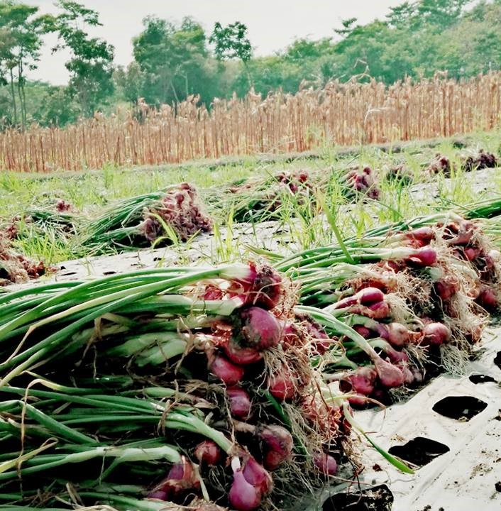

Informasi Barang/Jasa
Kami menyediakan berbagai produk pertanian, termasuk bibit, pupuk, dan alat pertanian. Silakan lihat tabel di bawah untuk informasi lebih lanjut.
| Nama Produk | Harga | Deskripsi |
|---|---|---|
| Bibit Bawang Merah | Rp 50.000 | Bibit unggul untuk hasil panen yang optimal. |